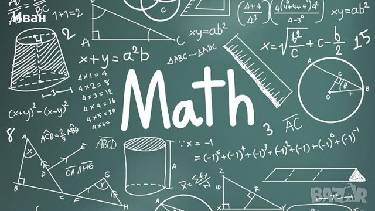

Специалност Математика

Във всеки випуск има 2 паралелки с по 26 ученици.
Учебният план включва допълнително:
-в ДЕВЕТИ клас - 2,5 (1+1,5) часа Информационни Технологии и 3 часа
Математика.
-в ДЕСЕТИ клас - 3 (1+2) часа Информационни технологии и 3 часа Математика.
-в ЕДИНАДЕСЕТИ клас - 3 часа Информационни технологии, 1 час Информатика и 4
часа Математика.
-в ДВАНАДЕСЕТИ клас - 4 часа Информационни технологии, 1 час Информатика, 6
часа Математика, 1 час Английски език и 1 час Български език.
Информатика
Биология
Към началната страница
Име:Християн Йорданов, 12.В клас, №25, 14.12.2020 година